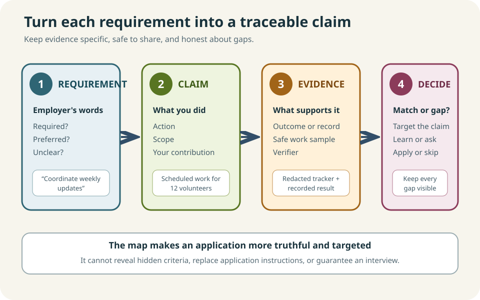

01 · Visual model
Build a chain someone could inspect

Text equivalent: Copy one requirement and classify it as required, preferred, or unclear. Write a claim that describes your real action and scope. Attach a safe signal such as a recorded result, redacted artifact, or willing verifier. If support is missing, keep the gap visible and choose a next action.
02 · Foundations
Three different kinds of statement
Requirement
What the posting says the employer wants. Keep the exact wording long enough to notice words such as “required,” “preferred,” and “must.”
Claim
What you say you did, learned, or achieved. It should name your contribution rather than borrow the posting's words without support.
Evidence
A specific example plus something that can be checked: scope, result, date, safe work sample, or agreed reference.
03 · Worked example
From “coordinate updates” to a defensible example
| Map step | Invented candidate entry |
|---|---|
| Requirement | Coordinate weekly updates and track deadlines. |
| Claim | Coordinated an eight-week schedule for 12 volunteers. |
| Evidence | A redacted tracker, dates, and a coordinator who can confirm the role. |
| Result | Missed handoffs fell from four in the first two weeks to one in the final two weeks. |
| Gap | No experience with the posting's named scheduling tool. |
Why this is stronger: The example gives the reader a situation, an action, scope, and a result they could discuss. The counts are fictional teaching data; a real applicant must use supportable records or clearly labeled estimates.
04 · Judgment
A gap is information, not a formatting problem
A preferred criterion may leave room for an adjacent example. A required license or credential may be a true gate. An unclear phrase calls for more research or a question—not a confident guess. The map supports a decision to learn, ask, apply honestly, or skip.
Privacy and integrity boundary: Do not upload confidential work, customer data, internal metrics, private feedback, or another person's identity as proof. Redact, summarize, or choose a different example. Never invent a number, credential, title, or contribution.
05 · Practice
Run the 20-minute map
Open the job-evidence worksheet. Choose three priority lines from a real posting, map one claim and safe signal to each, then label every gap and next action.
Knowledge check
- Why copy the employer's wording before drafting?
- What makes evidence safer and stronger than a vague trait?
- What should remain visible when a required credential is missing?
Reveal answer guidance
The wording preserves the stated distinction between required, preferred, and unclear criteria. Strong evidence connects a real action to specific, shareable support without exposing protected information. A missing credential remains a gap until it is earned or the employer clarifies that it is not required.
06 · Next steps
Use occupational data to clarify, not overwrite, the posting
Start with CareerOneStop's written guide to analyzing a job posting. Then use the O*NET Details Report guide to understand the difference between occupation-specific tasks, broader work activities, and skills. O*NET supplies context; the employer's actual instructions still control the application.